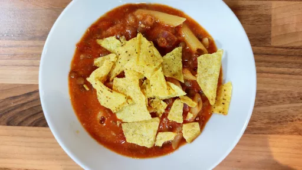

Cheesy taco pasta
Italian meets Mexican in this tasty Cheesy Taco Pasta dish. Pasta is a great cost-effective way to bulk out meals for the family. Choose wholemeal or high fibre versions as often as possible.
Servings: 4
Total: 30 mins
 Vegetarian
Vegetarian
Ingredients
- 1 tbsp extra virgin olive oil
- 1 red onion, diced
- 1 red capsicum, finely diced
- 2 cloves garlic, crushed
- 400 g tinned brown lentils, rinsed and drained
- 1 small red chilli, sliced
- 3 tbsp taco seasoning, reduced salt
- 500 ml water
- 400 g tinned tomatoes, diced
- 100 grams wholemeal pasta, any shape
- 120 g reduced-fat cheddar cheese, grated
- 25 g plain corn chips, crushed
- 65 g reduced-fat Greek natural yoghurt
- 2 tbsp fresh coriander, chopped
Instructions
- Heat olive oil1 tbspin a saucepan over medium-high heat. Addonion1andcapsicum1and cook for 3-4 minutes or until soft.
- Add garlic2 cloves,lentils400 g,chilli1 smallandtaco seasoning3 tbsp. Stir to combine and cook for a couple of minutes.
- Add the water500 ml, tinned tomato andpasta100 grams. Bring to the boil then reduce to a simmer, cover and cook for about 15 minutes or until thepasta100 gramsis tender.
- Stir through the grated cheese120 g, until melted.
- Divide taco pasta100 gramsbetween four bowls and top each with some crushedcorn chips25 g, a dollop ofyoghurt65 gand a sprinkle of coriander to serve.
- kcal 345
- fat ? g
- saturates ? g
- carbs ? g
- sugar ? g
- fibre ? g
- protein ? g
- salt ? g